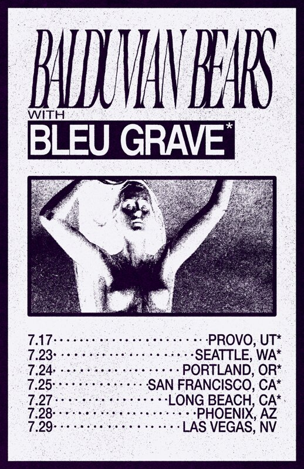

News
Tour
Store
Music
Video
Sign Up
Tour
Next Shows
Oct 30, 2026
Provo, UT
ABGS Bar
21+, $5 entrance fee
Dec 17, 2026
Hollywood, CA
Whisky a Go Go
opening for Gene Loves Jezebel
Tickets
Jul 23, 2027
Hollywood, CA
Whisky a Go Go
opening for Black Flag
Tickets
Past Shows
